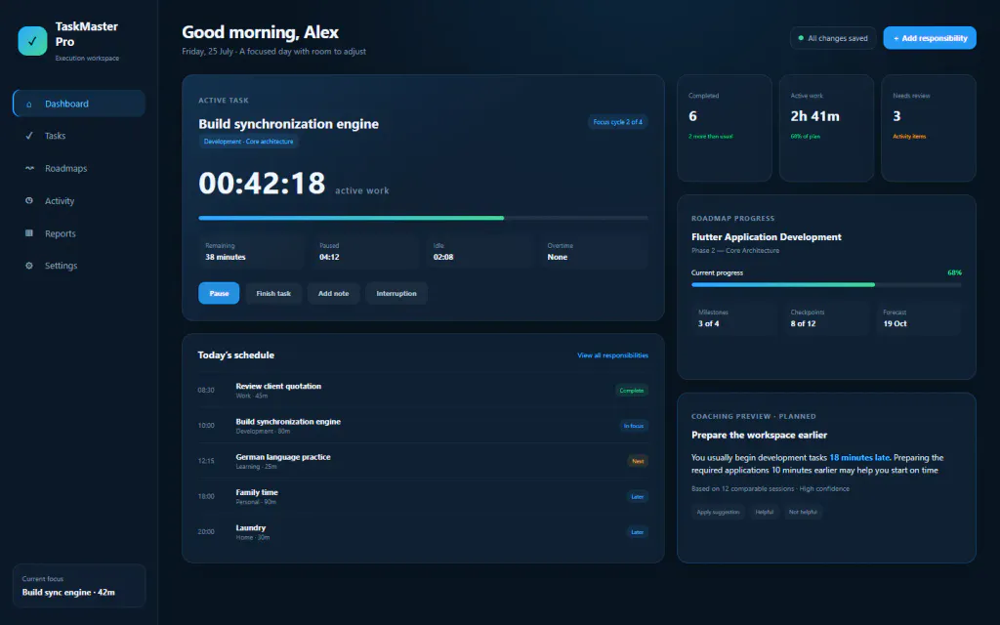
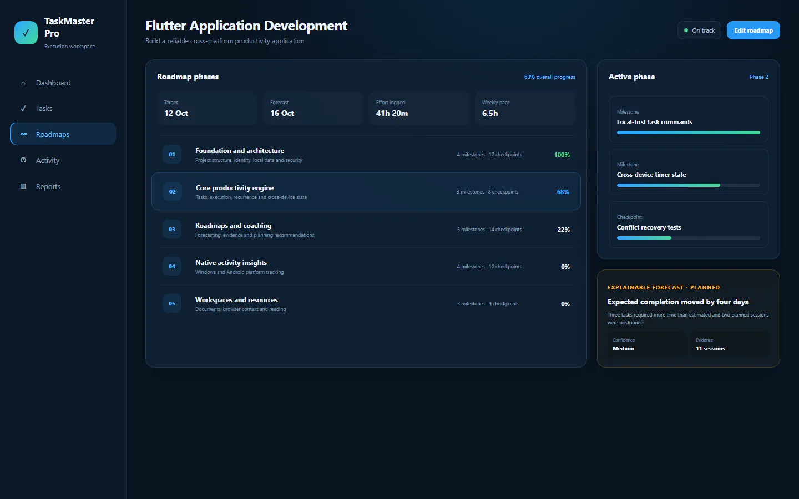
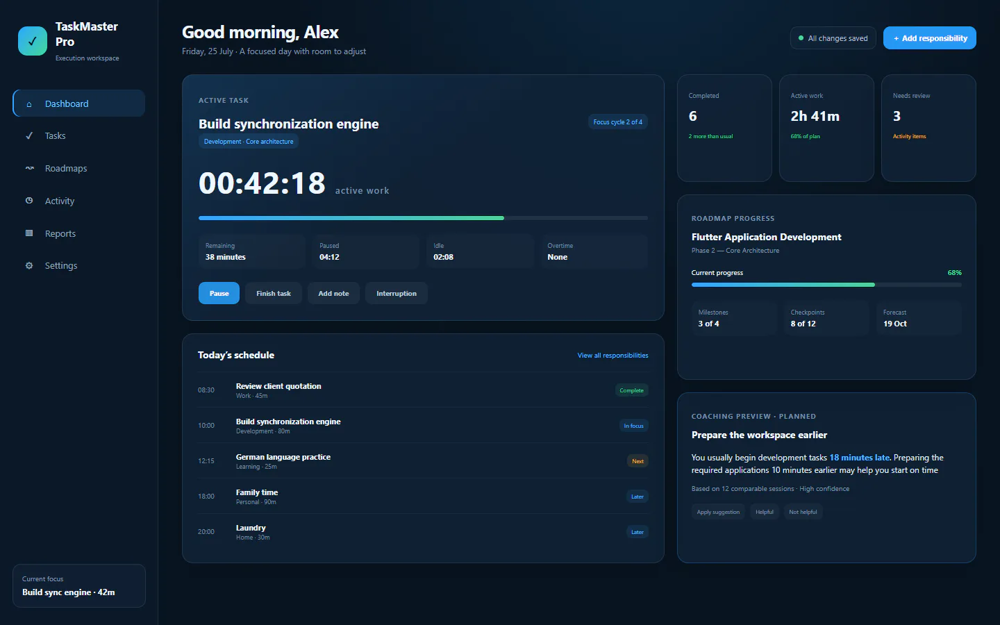
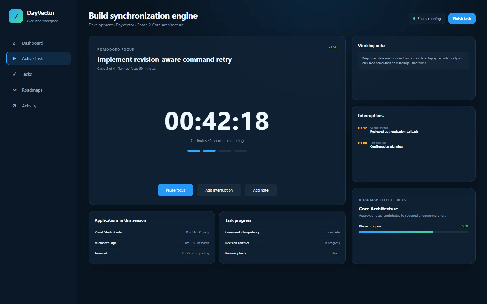
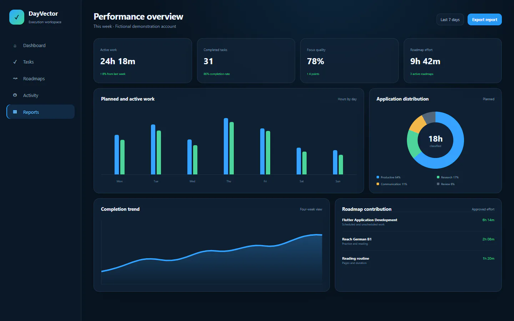

route
Available
Turn large goals into clear phases
Create roadmaps with phases, milestones, checkpoints, recurring work, practice targets and completion requirements
TaskMaster Pro combines task management, structured roadmaps, time tracking and personalized coaching to help you organize your responsibilities, improve your habits and make better use of your time
It connects planned work with real activity, credits useful effort to the task it supports and turns verified patterns into clear recommendations

TaskMaster Pro connects what you plan with what you actually do. It measures real effort, recognizes useful work, identifies delays and helps you improve your future schedule
Long-term direction, daily responsibilities, real execution data and personalized guidance come together inside one calm workspace
Create roadmaps with phases, milestones, checkpoints, recurring work, practice targets and completion requirements
Bring priority, deadlines, available time, dependencies and roadmap importance into one practical recommendation
Track focused work, continuous sessions, pauses, idle periods, interruptions and the difference between planned and actual effort
Review activity from breaks or other sessions and credit approved effort to the task and roadmap it truly supported
Forecasts respond to actual effort, postponed work, missed sessions, confirmed progress and available capacity
Coaching uses today’s schedule, paused work, roadmap priorities and your preferences to offer a respectful next action
Create a personal, professional, learning, health or habit goal
Reach German B1Divide the goal into phases, milestones, checkpoints and practical recurring tasks
Match each responsibility with focused sessions, continuous timers, checklists, reading or manual completion
Compare the plan with actual performance and use evidence to shape the next one

Roadmaps turn long-term direction into measurable phases and responsibilities. Every item remains editable and every percentage has an explanation
TaskMaster Pro is designed to match the work rather than forcing every activity into the same timer
Focus cycles, breaks, pauses and interruptions
Long work blocks, active time and overtime
Required items, priorities and completion rules
Books, PDFs, duration, saved position and notes
Streaks, completion rate, recovery and timing
Arrival, duration, lateness and follow-up work
Combine timers, checklists, checkpoints and resources
Time does not always follow the schedule. The contribution engine retains raw activity, requests approval when needed and avoids counting the same physical minute twice
Pomodoro break · 5 minutes
4 minutes 12 seconds
German B1 roadmap updated
Compare the applications and websites expected for a task with the tools that were actually used, then correct classifications at any time
check_circleVisual Studio Code supported most of this development session
travel_exploreThe browser was used mainly for documentation research
helpOne recurring application still needs a task assignment
Friendly suggestions use today’s schedule, active or paused work, roadmap priorities and your coaching preferences. You remain in control
Your Work tasks usually begin 17 minutes late
This recommendation is based on your previous 12 Work sessions
Start, pause or resume the same task from Windows or Android. Tasks, roadmaps, settings and approved work stay consistent when devices are online
Create tasks, update roadmaps and keep working without a connection. Saved changes synchronize safely when your device reconnects
3 changes waiting safely
All changes synchronized
You choose which activity TaskMaster Pro may record and whether selected data remains local or is synchronized
TaskMaster Pro does not upload browser cookies, website login tokens, clipboard contents, form contents or unencrypted passwords
Today’s responsibilities, active work, roadmap progress, unresolved activity and coaching direction in one focused dashboard

Active task Roadmap progress Coaching

Contact the creator of TaskMaster Pro for application support, privacy questions, technical feedback, bug reports, feature suggestions or general enquiries
Download TaskMaster Pro and begin turning long-term goals into practical, measurable daily progress
Designed for Windows 10 and Windows 11
Designed for Android phones and tablets